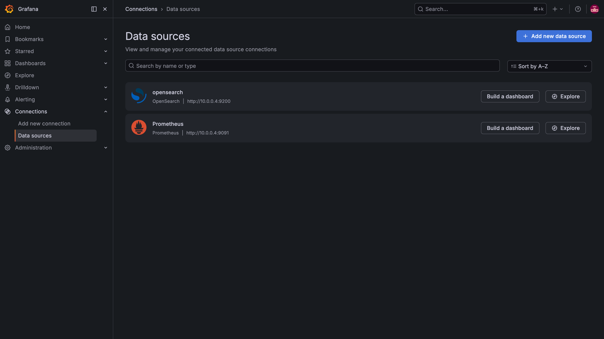
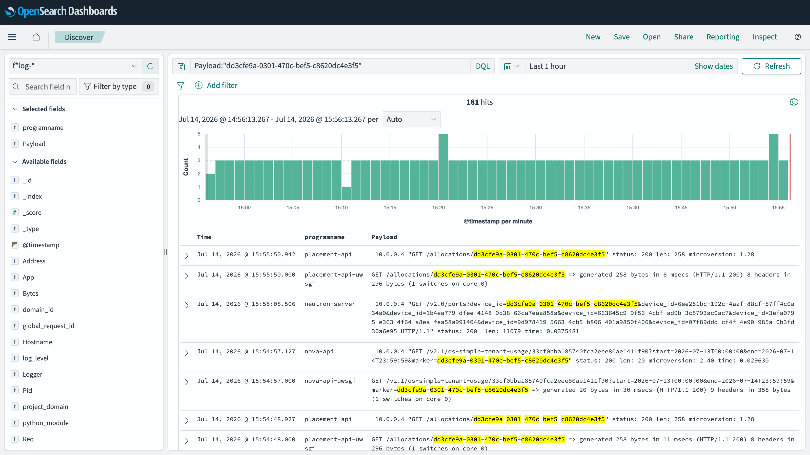

Day 21: 可觀測性——替雲巡田水¶
到目前為止,除錯全靠
docker logs一個容器一個容器翻。今天部署一整套可觀測性:Prometheus 收指標、Grafana 畫圖、集中式 log 把散在各處的紀錄匯到一個地方。本章最實際的一課不是「怎麼裝」,而是裝完之後,同一個除錯情境快了幾個數量級——用 Day 19 學的 UUID 追蹤,親自感受一次。
你在課程的哪裡
- 階段三開始:從「加能力」轉向「讓它活得久」。
- 今天:一次部署 Prometheus + Grafana + 集中式 log(OpenSearch),並收尾一件 Day 13 埋的待辦——把 Skyline 接上監控。
- 今天之後:Day 22 學升版與備份。有了觀測,升版時才看得到系統的反應。
該監控什麼¶
裝監控之前先想清楚要盯什麼,否則 Grafana 上一堆圖卻不知道哪個重要。一朵 OpenStack 雲的關鍵訊號:
| 面向 | 盯什麼 | 為什麼 |
|---|---|---|
| API | 請求延遲、錯誤率 | 使用者體感的第一線 |
| Agent | 各服務 agent 是否存活 | 一個 agent 死掉,對應功能就默默失效(想想 Day 8 的 CCM) |
| 佇列 | RabbitMQ 佇列深度 | 積壓 = 某個 worker 跟不上或掛了 |
| 資源 | 磁碟水位、記憶體 | 塞滿之前要先知道(Day 8 的 Nova disk 就是塞爆才發現) |
Kolla 的監控套件把這些對應的 exporter 全都內建了,你只要開開關。
步驟¶
步驟 1:開三個開關¶

集中式 log 那個開關會連動把 OpenSearch(儲存與查詢引擎)和它的儀表板一起帶起來:
sudo tee -a /etc/kolla/globals.yml << 'EOF'
enable_prometheus: "yes"
enable_grafana: "yes"
enable_central_logging: "yes"
EOF
source ~/kolla-venv/bin/activate
kolla-ansible deploy -i ~/all-in-one --tags prometheus,grafana,common,opensearch
這一步會拉不少映像檔並啟動一票 exporter,約 10 分鐘。failed=0 即過。記憶體帳:本課環境部署後只多約 3 GiB(OpenSearch 的 heap 預設 1 GiB),對這台機器毫無壓力。
步驟 2:驗證 Prometheus 抓到了東西¶
Prometheus 在 9091,不是慣例的 9090
Kolla 把 Prometheus 放在 9091,而且加了 basic auth(帳號 admin,密碼在 passwords.yml 的 prometheus_password)。照慣例打 9090 會撲空。
PW=$(sudo grep '^prometheus_password:' /etc/kolla/passwords.yml | awk '{print $2}')
curl -s -u admin:$PW http://10.0.0.4:9091/api/v1/targets \
| python3 -c "import sys,json,collections; \
t=json.load(sys.stdin)['data']['activeTargets']; \
print(collections.Counter(x['health'] for x in t))"
up 的那些就是 node、libvirt、mysqld、各 OpenStack 服務的 exporter——全被 Prometheus 定期抓取。(那一個 down 是 RabbitMQ exporter,見地雷 3。)
步驟 3:驗證集中式 log¶
curl -s http://10.0.0.4:9200/_cluster/health?pretty | grep status
curl -s http://10.0.0.4:9200/_cat/indices | grep flog
yellow 在單節點是正常的(它想要副本但只有一個節點可放)。索引裡已經有幾千筆 log——fluentd 正把各容器的 log 持續匯進來。
登入 Grafana(3000 埠)不用手動接資料源——Kolla 已經把 Prometheus(指標)和 OpenSearch(log)兩個都自動配置好了:

步驟 4:收尾 Day 13 的待辦 —— 把 Skyline 接上監控¶
還記得 Day 13 說「Prometheus 裝好後要回來動 Skyline 一次」嗎?就是現在。Skyline 的監控頁需要 Prometheus 當資料源,重新部署一次讓它接上:
會撞到一個隱性依賴（見地雷 2）
這一步在本課環境第一次跑會失敗,原因是 Day 15 開了 RGW 卻沒設一個相容變數。修法一行,細節在地雷 2。修完 failed=0,Skyline 的監控頁就有資料了。
同一個除錯,有觀測與沒觀測差多少¶
這是今天最值得體會的一段。回想 Day 8 除 CCM 的錯——當時要一個容器一個容器 docker logs 慢慢翻。現在有了集中式 log,同樣的「跨服務追一個資源」變成一次查詢:
# 開一台 VM,拿它的 UUID
VM=$(openstack server create obs-vm --flavor m1.tiny --image cirros --network day17-net -f value -c id)
sleep 20
# 用 UUID 在所有服務的 log 裡一次搜(Day 19 的技巧 × 集中式)
curl -s http://10.0.0.4:9200/flog-*/_search -H 'Content-Type: application/json' \
-d "{\"query\":{\"match_phrase\":{\"Payload\":\"$VM\"}},\"size\":5}" \
| python3 -c "import sys,json; \
d=json.load(sys.stdin); \
print('命中', d['hits']['total']['value'], '筆'); \
[print(' ', h['_source']['Payload'][:80]) for h in d['hits']['hits']]"
命中 19 筆
[instance: ee9d0bd4-…] Claim successful on node openstack-lab
10.0.0.4 "GET /allocations/ee9d0bd4-…" status: 200
10.0.0.4 "PUT /allocations/ee9d0bd4-…" status: 204
一次查詢,19 筆 log,橫跨 nova 與 placement——你直接看到這台 VM 從 claim 資源到 placement 記帳的完整軌跡。Day 8 那種「翻遍容器找線索」的除錯,現在是一行指令。這就是可觀測性的價值:它不是讓系統跑得更好,是讓你修得更快。
同一招在 OpenSearch Dashboards 的 Discover 頁長這樣——把某台 VM 的 UUID 貼進搜尋框,所有含這個 ID 的 log 一次濾出來,黃底就是命中的 UUID,programname 欄一眼看出它散落在 neutron-server、placement-api 等不同服務:

清理:openstack server delete obs-vm。
驗收 checkpoint¶
| 驗證 | 判準 | 本課環境的結果 |
|---|---|---|
| Prometheus | targets 絕大多數 up(9091 + basic auth) |
36/37 up |
| OpenSearch | cluster 回應、log 索引持續增長 | yellow、3857+ docs |
| Grafana | 3000 埠可登入,資料源自動含 prometheus + opensearch | 符合 |
| 集中 log 實戰 | 用 UUID 一次查詢串起跨服務 log | 19 筆命中 |
| Skyline 尾巴 | 接上 Prometheus 後監控頁有資料 | Day 13 待辦關閉 |
地雷記錄¶
地雷 1:cadvisor 崩潰迴圈 —— inotify: too many open files¶
症狀:prometheus_cadvisor 一直重啟,log 是 inotify_init: too many open files。
根因:cadvisor 用 inotify 監看每個容器,而這台主機已經跑了六十幾個容器——系統的 fs.inotify.max_user_instances 預設值被耗盡。
解法:提高上限。
echo 'fs.inotify.max_user_instances=1024' | sudo tee /etc/sysctl.d/99-inotify.conf
echo 'fs.inotify.max_user_watches=524288' | sudo tee -a /etc/sysctl.d/99-inotify.conf
sudo sysctl -p /etc/sysctl.d/99-inotify.conf
sudo docker restart prometheus_cadvisor
通則:監控主機的容器一多,cadvisor 死於 inotify 幾乎是必然——先提高 sysctl。
地雷 2:Skyline 缺變數 —— 服務間的隱性依賴¶
症狀:deploy --tags skyline 失敗,'ceph_rgw_swift_compatibility' is undefined。
根因:Day 15 開了 enable_ceph_rgw,但沒設 ceph_rgw_swift_compatibility。Skyline 的導覽列模板會引用這個變數來決定要不要顯示物件儲存入口——A 服務只開了半套設定,B 服務部署時才爆。
解法:globals.yml 補一行 ceph_rgw_swift_compatibility: "true",重跑即過。
教訓:這是「隱性依賴」的活教材——兩個服務之間沒有明顯的關聯,直到某次部署把它們湊在一起才現形。可觀測性這一天反而暴露了儲存那一天的欠債。
地雷 3:RabbitMQ exporter 未上線(已知缺口)¶
Prometheus 有一個 target(RabbitMQ 的 metrics,埠 15692)持續 down,因為它需要 rabbitmq_prometheus plugin 持久啟用,而這要透過重新部署 rabbitmq role(由 Kolla 管理 enabled_plugins)才會生效。本課程將其記為已知小缺口——不影響其餘 36 個 target,RabbitMQ 本身的健康仍可從佇列深度等其他指標觀察。
延伸閱讀¶
想往下深挖,從這幾份開始:
- Kolla-Ansible 的 Prometheus 指南 —— 本章部署的官方對照:exporter 清單、額外 scrape 目標、basic auth 使用者都在這份。
- Kolla-Ansible 的集中式 log 指南 —— OpenSearch 的保留策略、索引設定與 Dashboards 的官方說明。
- Prometheus 官方概念導覽 —— 指標、抓取、時間序列的第一手定義;看完就懂 targets 頁在講什麼。
- Google SRE Book:Monitoring Distributed Systems —— 「四大黃金訊號」的出處;本章「該監控什麼」那張表的理論根據。
下一步¶
監控上線了。Day 22 進入維運最實際的兩件事:更新與備份——而且從今天起,更新過程中系統的每一個反應,你都看得見。
Prometheus 標誌取自 CNCF 官方 artwork;Grafana 標誌為 Grafana Labs 資產。均作社群教學用途。